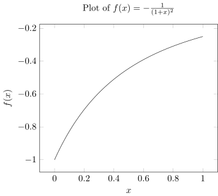
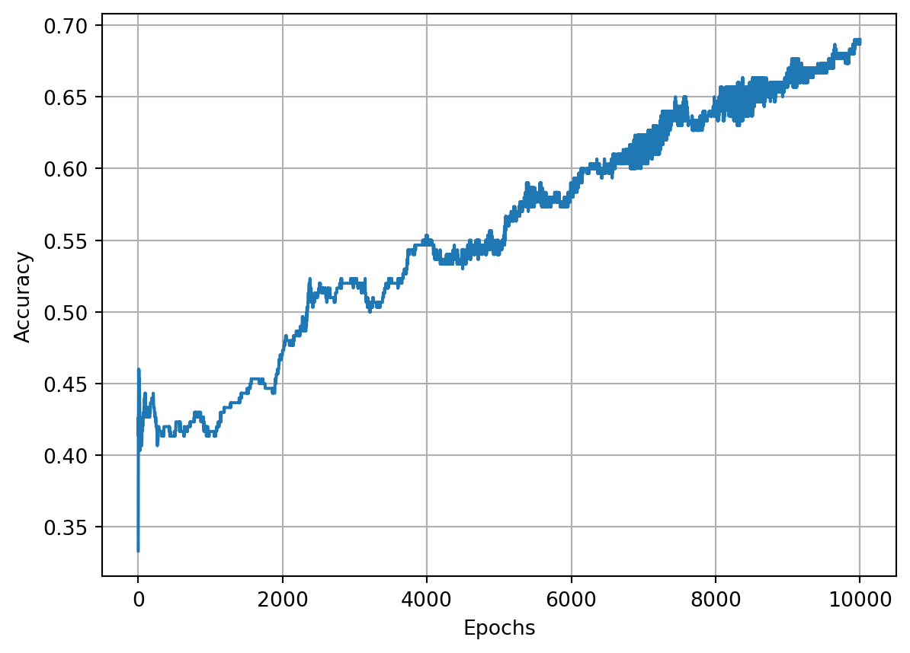

%load_ext itikzGradient vector
Definition. Let \(f:\mathbf{R}^n \to \mathbf{R}\) be a scalar-valued function. The gradient vector of \(f\) is defined as:
\[\begin{align*} \nabla f(\mathbf{x}) = \left[\frac{\partial f}{\partial x_1},\frac{\partial f}{\partial x_2},\ldots,\frac{\partial f}{\partial x_n}\right] \end{align*}\]
The graph of the function \(f:\mathbf{R}^n \to \mathbf{R}\) is the hypersurface in \(\mathbf{R}^{n+1}\) given by the equation \(x_{n+1}=f(x_1,\ldots,x_n)\).
Definition. \(f\) is said to be differentiable at \(\mathbf{a}\) if all the partial derivatives \(f_{x_i}(\mathbf{a})\) exist and if the function \(h(\mathbf{x})\) defined by:
\[\begin{align*} h(\mathbf{x}) = f(\mathbf{a}) + \nabla f(\mathbf{a})\cdot (\mathbf{x}-\mathbf{a}) \end{align*}\]
is a good linear approximation to \(f\) near \(a\), meaning that:
\[\begin{align*} L = \lim_{\mathbf{x} \to \mathbf{a}} \frac{f(\mathbf{x}) - h(\mathbf{x})}{||\mathbf{x} - \mathbf{a}||} = 0 \end{align*}\]
If \(f\) is differentiable at \(\mathbf{a},f(\mathbf{a})\), then the hypersurface determined by the graph has a tangent hyperplane at \((\mathbf{a},f(\mathbf{a}))\) given by the equation:
\[\begin{align*} h(\mathbf{x}) = f(\mathbf{a}) + \nabla f(\mathbf{a})\cdot (\mathbf{x}-\mathbf{a}) \end{align*}\]
The directional derivative
Let \(f(x,y)\) be a scalar-valued function of two variables. We understand the partial derivative \(\frac{\partial f}{\partial x}(a,b)\) as the slope at the point \((a,b,f(a,b))\) of the curve obtained as the intersection of the surface \(z=f(x,y)\) and the plane \(y=b\). The other partial derivative has a geometric interpretation. However, the surface \(z=f(x,y)\) contains infinitely many curves passing through \((a,b,f(a,b))\) whose slope we might choose to measure. The directional derivative enables us to do this.
Intuitively, \(\frac{\partial f}{\partial x}(a,b)\) is as the rate of change of \(f\) as we move infinitesimally from \(\mathbf{a}=(a,b)\) in the \(\mathbf{i}\) direction.
Mathematically, by the definition of the derivative of \(f\):
\[\begin{align*} \frac{\partial f}{\partial x}(a,b) &= \lim_{h \to 0} \frac{f(a+h,b) - f(a,b)}{h}\\ &=\lim_{h \to 0} \frac{f((a,b) + (h,0)) - f(a,b)}{h}\\ &=\lim_{h \to 0} \frac{f((a,b) + h(1,0)) - f(a,b)}{h}\\ &=\lim_{h \to 0} \frac{f(\mathbf{a} + h\mathbf{i}) - f(\mathbf{a})}{h} \end{align*}\]
Similarly, we have:
\[\begin{align*} \frac{\partial f}{\partial y}(a,b) = \lim_{h\to 0} \frac{f(\mathbf{a} + h\mathbf{j})-f(\mathbf{a})}{h} \end{align*}\]
Writing partial derivatives as we have enables us to see that they are special cases of a more general type of derivative. Suppose \(\mathbf{v}\) is a unit vector in \(\mathbf{R}^2\). The quantity:
\[\begin{align*} \lim_{h \to 0} \frac{f(\mathbf{a} + h\mathbf{v}) - f(\mathbf{a})}{h} \end{align*}\]
is nothing more than the rate of change of \(f\) as we move infinitesimally from \(\mathbf{a} = (a,b)\) in the direction specified by \(\mathbf{v}=(A,B) = A\mathbf{i} + B\mathbf{j}\).
Definition. Let \(\mathbf{v}\in \mathbf{R}^n\) be any unit vector, then the directional derivative of \(f\) at \(\mathbf{a}\) in the direction of \(\mathbf{v}\), denoted \(D_{\mathbf{v}}f(\mathbf{a})\) is:
\[\begin{align*} D_{\mathbf{v}}f(\mathbf{a}) = \lim_{h \to 0} \frac{f(\mathbf{a} + h\mathbf{v}) - f(\mathbf{a})}{h} \end{align*}\]
Let’s define a new function \(F\) of a single variable \(t\), by holding everything else constant:
\[\begin{align*} F(t) = f(\mathbf{a} + t\mathbf{v}) \end{align*}\]
Then, by the definition of directional derivatives, we have:
\[\begin{align*} D_{\mathbf{v}}f(\mathbf{a}) &= \lim_{t\to 0} \frac{f(\mathbf{a} + t\mathbf{v}) - f(\mathbf{a})}{t}\\ &= \lim_{t\to 0} \frac{F(t) - F(0)}{t - 0} \\ &= F'(0) \end{align*}\]
That is:
\[\begin{align*} D_{\mathbf{v}}f(\mathbf{a}) = \frac{d}{dt} f(\mathbf{a} + t\mathbf{v})\vert_{t=0} \end{align*}\]
Let \(\mathbf{x}(t) = \mathbf{a}+t\mathbf{v}\). Then, by the chain rule:
\[\begin{align*} \frac{d}{dt} f(\mathbf{a} + t\mathbf{v}) &= Df(\mathbf{x}) D\mathbf{x}(t) \\ &= \nabla f(\mathbf{x}) \cdot \mathbf{v} \end{align*}\]
This equation emphasizes the geometry of the situation. The directional derivative is just the dot product of the gradient vector and the direction vector \(\mathbf{v}\).
Theorem. Let \(f:X\to\mathbf{R}\) be differentiable at \(\mathbf{a}\in X\). Then, the directional derivative \(D_{\mathbf{v}}f(\mathbf{a})\) exists for all directions \(\mathbf{v}\in\mathbf{R}^n\) and moreover we have:
\[\begin{align*} D_{\mathbf{v}}f(\mathbf{a}) = \nabla f(\mathbf{x})\cdot \mathbf{v} \end{align*}\]
Gradients and steepest ascent
Suppose you are traveling in space near the planet Nilrebo and that one of your spaceship’s instruments measures the external atmospheric pressure on your ship as a function \(f(x,y,z)\) of position. Assume quite reasonably that this function is differentiable. Then, the directional derivative exists and if you travel from point \(\mathbf{a}=(a,b,c)\) in the direction of the unit vector \(\mathbf{u}=u\mathbf{i}+v\mathbf{j}+w\mathbf{k}\), the rate of change of pressure is given by:
\[\begin{align*} D_{\mathbf{u}}f(\mathbf{a}) = \nabla f(\mathbf{a}) \cdot \mathbf{u} = ||\nabla f(\mathbf{a})|| \cdot ||\mathbf{u}|| \cos \theta \end{align*}\]
where \(\theta\) is the angle between \(\mathbf{u}\) and the gradient vector \(\nabla f(\mathbf{a})\). Because, \(-1 \leq \cos \theta \leq 1\), and \(||\mathbf{u}||=1\), we have:
\[\begin{align*} - ||\nabla f(\mathbf{a})|| \leq D_{\mathbf{u}}f(\mathbf{a}) \leq ||\nabla f(\mathbf{a})|| \end{align*}\]
Moreover, \(\cos \theta = 1\) when \(\theta = 0\) and \(\cos \theta = -1\) when \(\theta = \pi\).
Theorem. The directional derivative \(D_{\mathbf{u}}f(\mathbf{a})\) is maximized, with respect to the direction, when \(\mathbf{u}\) points in the direction of the gradient vector \(f(\mathbf{a})\) and is minimized when \(\mathbf{u}\) points in the opposite direction. Furthermore, the maximum and minimum values of \(D_{\mathbf{u}}f(\mathbf{a})\) are \(||\nabla f(\mathbf{a})||\) and \(-||\nabla f(\mathbf{a})||\).
Theorem Let \(f:X \subseteq \mathbf{R}^n \to \mathbf{R}\) be a function of class \(C^1\). If \(\mathbf{x}_0\) is a point on the level set \(S=\{\mathbf{x} \in X | f(\mathbf{x}) = c\}\), the gradient vector \(f(\mathbf{x}_0) \in \mathbf{R}^n\) is perpendicular to \(S\).
Proof. We need to establish the following: if \(\mathbf{v}\) is any vector tangent to \(S\) at \(\mathbf{x}_0\), then \(\nabla f(\mathbf{x}_0)\) is perpendicular to \(\mathbf{v}\) (i.e. \(\nabla f(\mathbf{x}_0) \cdot \mathbf{v} = 0\)). By a tangent vector to \(S\) at \(\mathbf{x}_0\), we mean that \(\mathbf{v}\) is the velocity vector of a curve \(C\) that lies in \(S\) and passes through \(\mathbf{x}_0\).
Let \(C\) be given parametrically by \(\mathbf{x}(t)=(x_1(t),\ldots,x_n(t))\) where \(a < t < b\) and \(\mathbf{x}(t_0) = \mathbf{x}_0\) for some number \(t_0\) in \((a,b)\).
\[\begin{align*} \frac{d}{dt}[f(\mathbf{x}(t))] &= Df(\mathbf{x}) \cdot \mathbf{x}'(t)\\ &= \nabla f(\mathbf{x}) \cdot \mathbf{v} \end{align*}\]
Evaluation at \(t = t_0\), yields:
\[\begin{align*} \nabla f (\mathbf{x}'(t_0)) \cdot \mathbf{x}'(t_0) = \nabla f(\mathbf{x}_0) \cdot \mathbf{v} \end{align*}\]
On the other hand, since \(C\) is contained in \(S\), \(f(\mathbf{x})=c\). So,
\[\begin{align*} \frac{d}{dt}[f(\mathbf{x}(t))] &= \frac{d}{dt}[c] = 0 \end{align*}\]
Putting the above two facts together, we have the desired result.
Gradient Descent - Naive Implementation
Beginning at \(\mathbf{x}_0\), optimization algorithms generate a sequence of iterates ${k}{k=0}^{} that terminate when no more progress can be made or it seems a solution point has been approximated with sufficient accuracy. $The gradient descent method is an optimization algorithm that moves along \(\mathbf{d}_k = -\nabla f(\mathbf{x}_k)\) at every step. Thus,
\[\begin{align*} \mathbf{x}_{k+1} = \mathbf{x}_k - \alpha_k \mathbf{d}_k \end{align*}\]
It can choose the step length \(\alpha_k\) in a variety of ways. One advantage of steepest descent is that it requires the calculation of the gradient \(\nabla f(\mathbf{x}_k)\), but not of the second derivatives. However, it can be excruciatingly slow on difficult problems.
from typing import Callable
import numpy as np
def gradient_descent(
func: Callable[[float], float],
alpha: float,
xval_0: np.array,
epsilon: float = 1e-5,
n_iter: int = 10000,
debug_step: int = 100
):
"""
The gradient descent algorithm.
"""
xval_hist = []
funcval_hist = []
xval_curr = xval_0
error = 1.0
i = 0
while np.linalg.norm(error) > epsilon and i < n_iter:
# Save down x_curr and func(x_curr)
xval_hist.append(xval_curr)
funcval_hist.append(func(xval_curr))
# Calculate the forward difference
bump = 0.001
num_dims = len(xval_curr)
xval_bump = xval_curr + np.eye(num_dims) * bump
xval_nobump = np.full((num_dims,num_dims),xval_curr)
grad = np.array(
[(func(xval_h) - func(xval))/bump for xval_h,xval in zip(xval_bump,xval_nobump)]
)
# Compute the next iterate
xval_next = xval_curr - alpha * grad
# Compute the error vector
error = xval_next - xval_curr
if i % debug_step == 0:
print(f"x[{i}] = {xval_curr}, f({xval_curr}) = {func(xval_curr)}, f'({xval_curr}) = {grad}, error={error}")
xval_curr = xval_next
i += 1
return xval_hist, funcval_histOne infamous test function is the Rosenbrock function defined as:
\[\begin{align*} f(x,y) = (a-x)^2 + b(y-x^2)^2 \end{align*}\]
def rosenbrock(x):
return 1*(1-x[0])**2 + 100*(x[1]-x[0]**2)**2
def f(x):
return x[0]**2 + x[1]**2Here is the plot of the Rosenbrock function with parameters \(a=1,b=100\).
Show the code
%%itikz --temp-dir --tex-packages=tikz,pgfplots --tikz-libraries=arrows --implicit-standalone
\begin{tikzpicture}[scale=1.5]
\begin{axis}[
title={Plot of $f(x,y)=(1-x)^2 + 100*(y-x^2)^2$},
]
\addplot3 [surf] {(1-x)^2 + 100*(y-x^2)^2};
\end{axis}
\end{tikzpicture}
x_history, f_x_history = gradient_descent(
func=rosenbrock,
alpha=0.001,
xval_0=np.array([-2.0, 2.0]),
epsilon=1e-7
)
print(f"x* = {x_history[-1]}, f(x*)={f_x_history[-1]}")x[0] = [-2. 2.], f([-2. 2.]) = 409.0, f'([-2. 2.]) = [-1603.9997999 -399.9 ], error=[1.6039998 0.3999 ]
x[100] = [-1.21573135 1.4846852 ], f([-1.21573135 1.4846852 ]) = 4.913930973117059, f'([-1.21573135 1.4846852 ]) = [-0.59143582 1.43649942], error=[ 0.00059144 -0.0014365 ]
x[200] = [-1.15456312 1.33982208], f([-1.15456312 1.33982208]) = 4.646774509684191, f'([-1.15456312 1.33982208]) = [-0.63352278 1.46121618], error=[ 0.00063352 -0.00146122]
x[300] = [-1.08880363 1.19242874], f([-1.08880363 1.19242874]) = 4.367910567944863, f'([-1.08880363 1.19242874]) = [-0.68371618 1.48708036], error=[ 0.00068372 -0.00148708]
x[400] = [-1.01751529 1.04240594], f([-1.01751529 1.04240594]) = 4.075364415596593, f'([-1.01751529 1.04240594]) = [-0.74476028 1.51371634], error=[ 0.00074476 -0.00151372]
x[500] = [-0.93942309 0.88971661], f([-0.93942309 0.88971661]) = 3.7665471729835542, f'([-0.93942309 0.88971661]) = [-0.82078938 1.54017449], error=[ 0.00082079 -0.00154017]
x[600] = [-0.852733 0.73447451], f([-0.852733 0.73447451]) = 3.4379791859951783, f'([-0.852733 0.73447451]) = [-0.91828369 1.56418989], error=[ 0.00091828 -0.00156419]
x[700] = [-0.75481968 0.5771542 ], f([-0.75481968 0.5771542 ]) = 3.084870257886296, f'([-0.75481968 0.5771542 ]) = [-1.04781303 1.58029219], error=[ 0.00104781 -0.00158029]
x[800] = [-0.64168053 0.41912656], f([-0.64168053 0.41912656]) = 2.700550578035915, f'([-0.64168053 0.41912656]) = [-1.22703383 1.57453186], error=[ 0.00122703 -0.00157453]
x[900] = [-0.50705885 0.26415099], f([-0.50705885 0.26415099]) = 2.2761858032477003, f'([-0.50705885 0.26415099]) = [-1.48353803 1.50846312], error=[ 0.00148354 -0.00150846]
x[1000] = [-0.34194164 0.12278388], f([-0.34194164 0.12278388]) = 1.804241076974863, f'([-0.34194164 0.12278388]) = [-1.8359394 1.27195859], error=[ 0.00183594 -0.00127196]
x[1100] = [-0.14169005 0.02277644], f([-0.14169005 0.02277644]) = 1.3041853709747415, f'([-0.14169005 0.02277644]) = [-2.12190006 0.64007415], error=[ 0.0021219 -0.00064007]
x[1200] = [0.061974 0.00234408], f([0.061974 0.00234408]) = 0.8801167796065087, f'([0.061974 0.00234408]) = [-1.83608896 -0.19933914], error=[0.00183609 0.00019934]
x[1300] = [0.21663402 0.04370765], f([0.21663402 0.04370765]) = 0.6147007968271538, f'([0.21663402 0.04370765]) = [-1.26697455 -0.54452941], error=[0.00126697 0.00054453]
x[1400] = [0.32250311 0.10065936], f([0.32250311 0.10065936]) = 0.4601235443972235, f'([0.32250311 0.10065936]) = [-0.87958021 -0.56977864], error=[0.00087958 0.00056978]
x[1500] = [0.39799324 0.1553073 ], f([0.39799324 0.1553073 ]) = 0.36336775912043645, f'([0.39799324 0.1553073 ]) = [-0.64674692 -0.51826374], error=[0.00064675 0.00051826]
x[1600] = [0.45484046 0.2040941 ], f([0.45484046 0.2040941 ]) = 0.29797496173087695, f'([0.45484046 0.2040941 ]) = [-0.49899986 -0.45714931], error=[0.000499 0.00045715]
x[1700] = [0.49948454 0.24697879], f([0.49948454 0.24697879]) = 0.2511437391628507, f'([0.49948454 0.24697879]) = [-0.39884873 -0.40120387], error=[0.00039885 0.0004012 ]
x[1800] = [0.53563653 0.28464229], f([0.53563653 0.28464229]) = 0.2161460959429839, f'([0.53563653 0.28464229]) = [-0.32718226 -0.35283964], error=[0.00032718 0.00035284]
x[1900] = [0.56558478 0.31782832], f([0.56558478 0.31782832]) = 0.1891400460199113, f'([0.56558478 0.31782832]) = [-0.27368824 -0.31156503], error=[0.00027369 0.00031157]
x[2000] = [0.59082668 0.34719456], f([0.59082668 0.34719456]) = 0.16777685109400048, f'([0.59082668 0.34719456]) = [-0.23242066 -0.27632251], error=[0.00023242 0.00027632]
x[2100] = [0.61239084 0.37329213], f([0.61239084 0.37329213]) = 0.15054029348272768, f'([0.61239084 0.37329213]) = [-0.19974281 -0.24608238], error=[0.00019974 0.00024608]
x[2200] = [0.63101238 0.39657675], f([0.63101238 0.39657675]) = 0.13640782331010107, f'([0.63101238 0.39657675]) = [-0.17331698 -0.21997402], error=[0.00017332 0.00021997]
x[2300] = [0.64723399 0.41742538], f([0.64723399 0.41742538]) = 0.12466481483785148, f'([0.64723399 0.41742538]) = [-0.15157652 -0.19729162], error=[0.00015158 0.00019729]
x[2400] = [0.66146723 0.43615155], f([0.66146723 0.43615155]) = 0.11479691094846929, f'([0.66146723 0.43615155]) = [-0.13343409 -0.17746934], error=[0.00013343 0.00017747]
x[2500] = [0.67403134 0.45301798], f([0.67403134 0.45301798]) = 0.10642463883761458, f'([0.67403134 0.45301798]) = [-0.11811224 -0.16005321], error=[0.00011811 0.00016005]
x[2600] = [0.68517873 0.46824651], f([0.68517873 0.46824651]) = 0.09926209755551035, f'([0.68517873 0.46824651]) = [-0.10504076 -0.14467701], error=[0.00010504 0.00014468]
x[2700] = [0.6951123 0.4820259], f([0.6951123 0.4820259]) = 0.09308995974910218, f'([0.6951123 0.4820259]) = [-0.09379214 -0.13104297], error=[9.37921375e-05 1.31042970e-04]
x[2800] = [0.70399745 0.49451788], f([0.70399745 0.49451788]) = 0.08773730806794754, f'([0.70399745 0.49451788]) = [-0.08403962 -0.11890697], error=[8.40396243e-05 1.18906968e-04]
x[2900] = [0.71197071 0.50586195], f([0.71197071 0.50586195]) = 0.0830691031238712, f'([0.71197071 0.50586195]) = [-0.07552926 -0.10806717], error=[7.55292552e-05 1.08067169e-04]
x[3000] = [0.71914598 0.51617916], f([0.71914598 0.51617916]) = 0.0789773438798074, f'([0.71914598 0.51617916]) = [-0.06806067 -0.09835534], error=[6.80606659e-05 9.83553399e-05]
x[3100] = [0.72561922 0.52557511], f([0.72561922 0.52557511]) = 0.07537470987861665, f'([0.72561922 0.52557511]) = [-0.06147367 -0.08963018], error=[6.14736689e-05 8.96301781e-05]
x[3200] = [0.73147196 0.53414237], f([0.73147196 0.53414237]) = 0.07218990870877719, f'([0.73147196 0.53414237]) = [-0.05563867 -0.08177214], error=[5.56386669e-05 8.17721407e-05]
x[3300] = [0.73677398 0.5419625 ], f([0.73677398 0.5419625 ]) = 0.06936421830692595, f'([0.73677398 0.5419625 ]) = [-0.05044968 -0.07467942], error=[5.04496844e-05 7.46794172e-05]
x[3400] = [0.74158541 0.5491076 ], f([0.74158541 0.5491076 ]) = 0.06684888130831397, f'([0.74158541 0.5491076 ]) = [-0.04581922 -0.06826476], error=[4.58192212e-05 6.82647604e-05]
x[3500] = [0.74595839 0.55564166], f([0.74595839 0.55564166]) = 0.06460311669639388, f'([0.74595839 0.55564166]) = [-0.0416744 -0.06245297], error=[4.16743959e-05 6.24529741e-05]
x[3600] = [0.74993836 0.56162165], f([0.74993836 0.56162165]) = 0.06259258513480807, f'([0.74993836 0.56162165]) = [-0.03795402 -0.05717891], error=[3.79540174e-05 5.71789054e-05]
x[3700] = [0.75356514 0.5670985 ], f([0.75356514 0.5670985 ]) = 0.06078819210513875, f'([0.75356514 0.5670985 ]) = [-0.03460633 -0.05238583], error=[3.46063346e-05 5.23858277e-05]
x[3800] = [0.75687376 0.57211777], f([0.75687376 0.57211777]) = 0.05916514557937428, f'([0.75687376 0.57211777]) = [-0.03158729 -0.04802413], error=[3.15872877e-05 4.80241290e-05]
x[3900] = [0.75989517 0.57672041], f([0.75989517 0.57672041]) = 0.057702207583637304, f'([0.75989517 0.57672041]) = [-0.02885913 -0.04405024], error=[2.88591348e-05 4.40502387e-05]
x[4000] = [0.7626568 0.58094326], f([0.7626568 0.58094326]) = 0.05638109494458334, f'([0.7626568 0.58094326]) = [-0.02638936 -0.04042575], error=[2.63893643e-05 4.04257465e-05]
x[4100] = [0.76518306 0.58481954], f([0.76518306 0.58481954]) = 0.055185995883903605, f'([0.76518306 0.58481954]) = [-0.02414982 -0.03711667], error=[2.41498245e-05 3.71166711e-05]
x[4200] = [0.76749575 0.58837927], f([0.76749575 0.58837927]) = 0.05410317734662815, f'([0.76749575 0.58837927]) = [-0.02211602 -0.03409285], error=[2.21160232e-05 3.40928520e-05]
x[4300] = [0.76961435 0.59164961], f([0.76961435 0.59164961]) = 0.053120663958751035, f'([0.76961435 0.59164961]) = [-0.02026656 -0.03132744], error=[2.02665572e-05 3.13274397e-05]
x[4400] = [0.77155635 0.59465521], f([0.77155635 0.59465521]) = 0.05222797395068936, f'([0.77155635 0.59465521]) = [-0.01858265 -0.02879647], error=[1.85826472e-05 2.87964658e-05]
x[4500] = [0.77333746 0.59741843], f([0.77333746 0.59741843]) = 0.0514159006976055, f'([0.77333746 0.59741843]) = [-0.01704775 -0.02647848], error=[1.70477540e-05 2.64784795e-05]
x[4600] = [0.77497184 0.59995959], f([0.77497184 0.59995959]) = 0.050676331024424565, f'([0.77497184 0.59995959]) = [-0.01564726 -0.02435424], error=[1.56472604e-05 2.43542376e-05]
x[4700] = [0.77647229 0.60229719], f([0.77647229 0.60229719]) = 0.05000209332058696, f'([0.77647229 0.60229719]) = [-0.01436821 -0.02240644], error=[1.43682065e-05 2.24064399e-05]
x[4800] = [0.77785037 0.6044481 ], f([0.77785037 0.6044481 ]) = 0.049386829962891614, f'([0.77785037 0.6044481 ]) = [-0.01319907 -0.0206195 ], error=[1.31990673e-05 2.06195021e-05]
x[4900] = [0.77911655 0.6064277 ], f([0.77911655 0.6064277 ]) = 0.048824889666577914, f'([0.77911655 0.6064277 ]) = [-0.01212957 -0.01897936], error=[1.21295657e-05 1.89793588e-05]
x[5000] = [0.78028032 0.60825002], f([0.78028032 0.60825002]) = 0.04831123625687607, f'([0.78028032 0.60825002]) = [-0.01115051 -0.01747329], error=[1.11505139e-05 1.74732947e-05]
x[5100] = [0.78135033 0.60992789], f([0.78135033 0.60992789]) = 0.04784137103578656, f'([0.78135033 0.60992789]) = [-0.01025368 -0.0160898 ], error=[1.02536785e-05 1.60897962e-05]
x[5200] = [0.78233441 0.61147304], f([0.78233441 0.61147304]) = 0.04741126645641007, f'([0.78233441 0.61147304]) = [-0.00943166 -0.01481842], error=[9.43166497e-06 1.48184227e-05]
x[5300] = [0.78323972 0.61289621], f([0.78323972 0.61289621]) = 0.04701730924306869, f'([0.78323972 0.61289621]) = [-0.00867782 -0.01364969], error=[8.67781901e-06 1.36496942e-05]
x[5400] = [0.78407277 0.61420723], f([0.78407277 0.61420723]) = 0.04665625143481761, f'([0.78407277 0.61420723]) = [-0.00798614 -0.01257499], error=[7.98614092e-06 1.25749918e-05]
x[5500] = [0.7848395 0.61541511], f([0.7848395 0.61541511]) = 0.046325168101793636, f'([0.7848395 0.61541511]) = [-0.00735121 -0.01158647], error=[7.35121185e-06 1.15864706e-05]
x[5600] = [0.78554535 0.61652811], f([0.78554535 0.61652811]) = 0.0460214207026976, f'([0.78554535 0.61652811]) = [-0.00676813 -0.01067698], error=[6.76812965e-06 1.06769829e-05]
x[5700] = [0.78619527 0.6175538 ], f([0.78619527 0.6175538 ]) = 0.04574262522875343, f'([0.78619527 0.6175538 ]) = [-0.00623245 -0.00984001], error=[6.23245295e-06 9.84000949e-06]
x[5800] = [0.7867938 0.61849913], f([0.7867938 0.61849913]) = 0.04548662442334714, f'([0.7867938 0.61849913]) = [-0.00574015 -0.0090696 ], error=[5.74015229e-06 9.06959921e-06]
x[5900] = [0.7873451 0.6193705], f([0.7873451 0.6193705]) = 0.04525146348396852, f'([0.7873451 0.6193705]) = [-0.00528757 -0.00836031], error=[5.28756719e-06 8.36031487e-06]
x[6000] = [0.78785296 0.62017375], f([0.78785296 0.62017375]) = 0.045035368749296534, f'([0.78785296 0.62017375]) = [-0.00487137 -0.00770719], error=[4.87136843e-06 7.70718502e-06]
x[6100] = [0.78832088 0.62091428], f([0.78832088 0.62091428]) = 0.044836728953429675, f'([0.78832088 0.62091428]) = [-0.00448852 -0.00710566], error=[4.48852476e-06 7.10566086e-06]
x[6200] = [0.78875205 0.62159704], f([0.78875205 0.62159704]) = 0.044654078694637625, f'([0.78875205 0.62159704]) = [-0.00413627 -0.00655158], error=[4.13627337e-06 6.55157754e-06]
x[6300] = [0.78914941 0.62222658], f([0.78914941 0.62222658]) = 0.04448608382018632, f'([0.78914941 0.62222658]) = [-0.00381209 -0.00604112], error=[3.81209378e-06 6.04111943e-06]
x[6400] = [0.78951564 0.62280709], f([0.78951564 0.62280709]) = 0.04433152847384626, f'([0.78951564 0.62280709]) = [-0.00351368 -0.00557079], error=[3.51368458e-06 5.57078892e-06]
x[6500] = [0.78985322 0.62334242], f([0.78985322 0.62334242]) = 0.04418930359028886, f'([0.78985322 0.62334242]) = [-0.00323894 -0.00513738], error=[3.23894267e-06 5.13737824e-06]
x[6600] = [0.79016442 0.62383612], f([0.79016442 0.62383612]) = 0.044058396652042094, f'([0.79016442 0.62383612]) = [-0.00298594 -0.00473794], error=[2.98594476e-06 4.73794400e-06]
x[6700] = [0.79045132 0.62429144], f([0.79045132 0.62429144]) = 0.043937882551102446, f'([0.79045132 0.62429144]) = [-0.00275293 -0.00436978], error=[2.75293078e-06 4.36978426e-06]
x[6800] = [0.79071584 0.62471139], f([0.79071584 0.62471139]) = 0.043826915419548224, f'([0.79071584 0.62471139]) = [-0.00253829 -0.00403042], error=[2.53828897e-06 4.03041770e-06]
x[6900] = [0.79095975 0.62509873], f([0.79095975 0.62509873]) = 0.043724721312292006, f'([0.79095975 0.62509873]) = [-0.00234054 -0.00371756], error=[2.34054257e-06 3.71756474e-06]
x[7000] = [0.79118466 0.62545602], f([0.79118466 0.62545602]) = 0.04363059164103049, f'([0.79118466 0.62545602]) = [-0.00215834 -0.00342913], error=[2.1583377e-06 3.4291304e-06]
x[7100] = [0.79139206 0.62578558], f([0.79139206 0.62578558]) = 0.04354387727196358, f'([0.79139206 0.62578558]) = [-0.00199043 -0.00316319], error=[1.99043258e-06 3.16318877e-06]
x[7200] = [0.79158334 0.6260896 ], f([0.79158334 0.6260896 ]) = 0.04346398321136682, f'([0.79158334 0.6260896 ]) = [-0.00183569 -0.00291797], error=[1.83568767e-06 2.91796883e-06]
x[7300] = [0.79175975 0.62637005], f([0.79175975 0.62637005]) = 0.04339036381293205, f'([0.79175975 0.62637005]) = [-0.00169306 -0.00269184], error=[1.69305681e-06 2.69184151e-06]
x[7400] = [0.79192246 0.62662877], f([0.79192246 0.62662877]) = 0.043322518449198426, f'([0.79192246 0.62662877]) = [-0.00156158 -0.00248331], error=[1.56157921e-06 2.48330799e-06]
x[7500] = [0.79207254 0.62686745], f([0.79207254 0.62686745]) = 0.043259987596619934, f'([0.79207254 0.62686745]) = [-0.00144037 -0.00229099], error=[1.44037213e-06 2.29098894e-06]
x[7600] = [0.79221097 0.62708765], f([0.79221097 0.62708765]) = 0.04320234929002388, f'([0.79221097 0.62708765]) = [-0.00132862 -0.00211361], error=[1.32862427e-06 2.11361473e-06]
x[7700] = [0.79233866 0.6272908 ], f([0.79233866 0.6272908 ]) = 0.04314921590756835, f'([0.79233866 0.6272908 ]) = [-0.00122559 -0.00195002], error=[1.22558977e-06 1.95001646e-06]
x[7800] = [0.79245645 0.62747824], f([0.79245645 0.62747824]) = 0.04310023125194112, f'([0.79245645 0.62747824]) = [-0.00113058 -0.00179912], error=[1.13058270e-06 1.79911778e-06]
x[7900] = [0.79256512 0.62765116], f([0.79256512 0.62765116]) = 0.043055067897548094, f'([0.79256512 0.62765116]) = [-0.00104297 -0.00165993], error=[1.04297213e-06 1.65992739e-06]
x[8000] = [0.79266536 0.62781071], f([0.79266536 0.62781071]) = 0.04301342477692797, f'([0.79266536 0.62781071]) = [-0.00096218 -0.00153153], error=[9.62177510e-07 1.53153219e-06]
x[8100] = [0.79275784 0.62795793], f([0.79275784 0.62795793]) = 0.04297502498265994, f'([0.79275784 0.62795793]) = [-0.00088766 -0.00141309], error=[8.87664572e-07 1.41309098e-06]
x[8200] = [0.79284316 0.62809375], f([0.79284316 0.62809375]) = 0.04293961376367924, f'([0.79284316 0.62809375]) = [-0.00081894 -0.00130383], error=[8.18941521e-07 1.30382870e-06]
x[8300] = [0.79292187 0.62821908], f([0.79292187 0.62821908]) = 0.042906956697226724, f'([0.79292187 0.62821908]) = [-0.00075556 -0.00120303], error=[7.55555570e-07 1.20303114e-06]
x[8400] = [0.79299449 0.62833472], f([0.79299449 0.62833472]) = 0.0428768380196896, f'([0.79299449 0.62833472]) = [-0.00069709 -0.00111004], error=[6.97089770e-07 1.11004009e-06]
x[8500] = [0.7930615 0.62844142], f([0.7930615 0.62844142]) = 0.04284905910137013, f'([0.7930615 0.62844142]) = [-0.00064316 -0.00102425], error=[6.43160115e-07 1.02424887e-06]
x[8600] = [0.79312332 0.62853987], f([0.79312332 0.62853987]) = 0.042823437051786595, f'([0.79312332 0.62853987]) = [-0.00059341 -0.0009451 ], error=[5.93412879e-07 9.45098282e-07]
x[8700] = [0.79318036 0.62863072], f([0.79318036 0.62863072]) = 0.042799803443495064, f'([0.79318036 0.62863072]) = [-0.00054752 -0.00087207], error=[5.47522184e-07 8.72072797e-07]
x[8800] = [0.79323298 0.62871454], f([0.79323298 0.62871454]) = 0.04277800314363957, f'([0.79323298 0.62871454]) = [-0.00050519 -0.0008047 ], error=[5.05187770e-07 8.04697144e-07]
x[8900] = [0.79328154 0.62879189], f([0.79328154 0.62879189]) = 0.04275789324352625, f'([0.79328154 0.62879189]) = [-0.00046613 -0.00074253], error=[4.66132945e-07 7.42533120e-07]
x[9000] = [0.79332635 0.62886327], f([0.79332635 0.62886327]) = 0.042739342077472306, f'([0.79332635 0.62886327]) = [-0.0004301 -0.00068518], error=[4.30102710e-07 6.85176669e-07]
x[9100] = [0.79336769 0.62892913], f([0.79336769 0.62892913]) = 0.042722228323035905, f'([0.79336769 0.62892913]) = [-0.00039686 -0.00063226], error=[3.96862029e-07 6.32255199e-07]
x[9200] = [0.79340584 0.62898991], f([0.79340584 0.62898991]) = 0.042706440175499294, f'([0.79340584 0.62898991]) = [-0.00036619 -0.00058343], error=[3.66194250e-07 5.83425111e-07]
x[9300] = [0.79344104 0.62904599], f([0.79344104 0.62904599]) = 0.04269187459014697, f'([0.79344104 0.62904599]) = [-0.0003379 -0.00053837], error=[3.37899650e-07 5.38369528e-07]
x[9400] = [0.79347352 0.62909774], f([0.79347352 0.62909774]) = 0.042678436586495956, f'([0.79347352 0.62909774]) = [-0.00031179 -0.0004968 ], error=[3.11794092e-07 4.96796197e-07]
x[9500] = [0.79350349 0.6291455 ], f([0.79350349 0.6291455 ]) = 0.04266603860917542, f'([0.79350349 0.6291455 ]) = [-0.00028771 -0.00045844], error=[2.87707800e-07 4.58435569e-07]
x[9600] = [0.79353115 0.62918956], f([0.79353115 0.62918956]) = 0.042654599940640615, f'([0.79353115 0.62918956]) = [-0.00026548 -0.00042304], error=[2.65484229e-07 4.23039020e-07]
x[9700] = [0.79355666 0.62923023], f([0.79355666 0.62923023]) = 0.0426440461613444, f'([0.79355666 0.62923023]) = [-0.00024498 -0.00039038], error=[2.44979022e-07 3.90377218e-07]
x[9800] = [0.79358021 0.62926775], f([0.79358021 0.62926775]) = 0.04263430865338505, f'([0.79358021 0.62926775]) = [-0.00022606 -0.00036024], error=[2.26059053e-07 3.60238620e-07]
x[9900] = [0.79360194 0.62930238], f([0.79360194 0.62930238]) = 0.042625324144002115, f'([0.79360194 0.62930238]) = [-0.0002086 -0.00033243], error=[2.08601551e-07 3.32428085e-07]
x* = [0.7936218 0.62933403], f(x*)=0.04261711392593988Stochastic Gradient Descent(SGD)
In machine learning applications, we typically want to minimize the loss function \(\mathcal{L}(w)\) that has the form of a sum:
\[\begin{align*} \mathcal{L}(w) = \frac{1}{n}\sum_i L_i(w) \end{align*}\]
where the weights \(w\) (and the biases) are to be estimated. Each summand function \(L_i\) is typically associated with the \(i\)-th sample in the data-set used for training.
When we minimize the above function with respect to the weights and biases, a standard gradient descent method would perform the following operations:
\[\begin{align*} w_{k+1} := w_k - \alpha_k \nabla \mathcal{L}(w_{k}) = w_k - \frac{\alpha_k}{n}\sum_{i} \nabla L_i(w_{k}) \end{align*}\]
In the stochastic (or online) gradient descent algorithm, the true gradient of \(\mathcal{L}(w)\) is approximated by the gradient at a single sample:
\[\begin{align*} w_{k+1} := w_k - \alpha_k \nabla \mathcal{L}(w_{k}) = w_k - \alpha_k \nabla L_i(w_{k}) \end{align*}\]
SGDOptimizer class
We are now in a position to code the SGDOptimizer class.
# Global imports
import numpy as np
import nnfs
import matplotlib.pyplot as plt
from nnfs.datasets import spiral_data
from dense_layer import DenseLayer
from relu_activation import ReLUActivation
from softmax_activation import SoftmaxActivation
from loss import Loss
from categorical_cross_entropy_loss import CategoricalCrossEntropyLoss
from categorical_cross_entropy_softmax import CategoricalCrossEntropySoftmaxclass SGDOptimizer:
# Initialize the optimizer
def __init__(self, learning_rate=1.0):
self.learning_rate = learning_rate
# Update the parameters
def update_params(self, layer):
layer.weights -= self.learning_rate * layer.dloss_dweights
layer.biases -= self.learning_rate * layer.dloss_dbiasesLet’s play around with our optimizer.
# Create dataset
X, y = spiral_data(samples=100, classes=3)
# Create a DenseLayer with 2 input features and 64 neurons
dense1 = DenseLayer(2, 64)
# Create ReLU Activation (to be used with DenseLayer 1)
activation1 = ReLUActivation()
# Create the second DenseLayer with 64 inputs and 3 output values
dense2 = DenseLayer(64,3)
# Create SoftmaxClassifer's combined loss and activation
loss_activation = CategoricalCrossEntropySoftmax()
# The next step is to create the optimizer object
optimizer = SGDOptimizer()Now, we perform a forward pass of our sample data.
# Perform a forward pass for our sample data
dense1.forward(X)
# Performs a forward pass through the activation function
# takes the output of the first dense layer here
activation1.forward(dense1.output)
# Performs a forward pass through the second DenseLayer
dense2.forward(activation1.output)
# Performs a forward pass through the activation/loss function
# takes the output of the second DenseLayer and returns the loss
loss = loss_activation.forward(dense2.output, y)
# Let's print the loss value
print(f"Loss = {loss}")
# Now we do our backward pass
loss_activation.backward(loss_activation.output, y)
dense2.backward(loss_activation.dloss_dz)
activation1.backward(dense2.dloss_dinputs)
dense1.backward(activation1.dloss_dz)
# Then finally we use our optimizer to update the weights and biases
optimizer.update_params(dense1)
optimizer.update_params(dense2)Loss = 1.0986308753469538This is everything we need to train our model!
But why would we only perform this optimization only once, when we can perform it many times by leveraging Python’s looping capabilities? We will repeatedly perform a forward pass, backward pass and optimization until we reach some stopping point. Each full pass through all of the training data is called an epoch.
In most deep learning tasks, a neural network will be trained for multiple epochs, though the ideal scenario would be to have a perfect model with ideal weights and biases after only one epoch. To add multiple epochs of our training into our code, we will initialize our model and run a loop around all the code performing the forward pass, backward pass and optimization calculations.
# Create dataset
X, y = spiral_data(samples=100, classes=3)
# Create a dense layer with 2 input features and 64 output values
dense1 = DenseLayer(2, 64)
# Create ReLU Activation (to be used with the DenseLayer)
activation1 = ReLUActivation()
# Create a second DenseLayer with 64 input features (as we take
# output of the previous layer here) and 3 output values (output values)
dense2 = DenseLayer(64, 3)
# Create Softmax classifier's combined loss and activation
loss_activation = CategoricalCrossEntropySoftmax()
# Create optimizer
optimizer = SGDOptimizer()
# Train in loop
for epoch in range(10001):
# Perform a forward pass of our training data through this layer
dense1.forward(X)
# Perform a forward pass through the activation function
# takes the output of the first dense layer here
activation1.forward(dense1.output)
# Perform a forward pass through second DenseLayer
# takes the outputs of the activation function of first layer as inputs
dense2.forward(activation1.output)
# Perform a forward pass through the activation/loss function
# takes the output of the second DenseLayer here and returns the loss
loss = loss_activation.forward(dense2.output, y)
if not epoch % 1000:
print(f"Epoch: {epoch}, Loss: {loss: .3f}")
# Backward pass
loss_activation.backward(loss_activation.output, y)
dense2.backward(loss_activation.dloss_dz)
activation1.backward(dense2.dloss_dinputs)
dense1.backward(activation1.dloss_dz)
# Update the weights and the biases
optimizer.update_params(dense1)
optimizer.update_params(dense2)Epoch: 0, Loss: 1.099
Epoch: 1000, Loss: 1.048
Epoch: 2000, Loss: 0.985
Epoch: 3000, Loss: 0.959
Epoch: 4000, Loss: 1.025
Epoch: 5000, Loss: 0.953
Epoch: 6000, Loss: 0.931
Epoch: 7000, Loss: 0.918
Epoch: 8000, Loss: 0.895
Epoch: 9000, Loss: 0.867
Epoch: 10000, Loss: 0.869Our neural network mostly stays stuck at around a loss of \(1.0\) and later around \(0.85\)-\(0.90\) Given that this loss didn’t decrease much, we can assume that this learning rate being too high, also caused the model to get stuck in a local minimum, which we’ll learn more about soon. Iterating over more epochs, doesn’t seem helpful at this point, which tells us that we’re likely stuck with our optimization. Does this mean that this is the most we can get from our optimizer on this dataset?
Recall that we’re adjusting our weights and biases by applying some fraction, in this case \(1.0\) to the gradient and subtracting this from the weights and biases. This fraction is called the learning rate (LR) and is the primary adjustable parameter for the optimizer as it decreases loss.
So far, we have a gradient of the loss function with respect to all of the parameters, and we want to apply a fraction of this gradient to the parameters in order to descend the loss value. In most cases, we won’t apply the negative gradient as is, as the direction of the function’s steepest descent will be continuously changing, and these values will usually be too big for meaningful model improvements to occur. Instead, we want to perform small steps - calculating the gradient, updating the parameters by a negative fraction of this gradient and repeating this in a loop. Small steps ensure that we are following the direction of the steepest descent, but these steps can also be too small, causing learning stagnation.
Learning Rate Decay
The idea of a learning rate decay is to start with a large learning rate, say \(1.0\) in our case and then decrease it during training. There are a few methods for doing this. One option is program a decay rate, which steadily decays the learning rate per batch or per epoch.
Let’s plan to decay per step. This can also be referred to as \(1/t\) decaying or exponential decaying. Basically, we’re going to update the learning rate each step by the reciprocal of the step count fraction. This fraction is a new hyper parameter that we’ll add to the optimizer, called the learning rate decay.
initial_learning_rate = 1.0
learning_rate_decay = 0.1
for step in range(10):
learning_rate = initial_learning_rate * 1.0 / (1 + learning_rate_decay * step)
print(learning_rate)1.0
0.9090909090909091
0.8333333333333334
0.7692307692307692
0.7142857142857143
0.6666666666666666
0.625
0.588235294117647
0.5555555555555556
0.5263157894736842The derivative of the function \(\frac{1}{1+x}\) is \(-\frac{1}{(1+x)^2}\).
Show the code
%%itikz --temp-dir --tex-packages=tikz,pgfplots --tikz-libraries=arrows --implicit-standalone
\begin{tikzpicture}[scale=1.5]
\begin{axis}[
title={Plot of $f(x)=-\frac{1}{(1+x)^2}$},
xlabel={$x$},
ylabel={$f(x)$}
]
\addplot [domain=0:1,samples=400] {-1/(( 1 + x)^2)};
\end{axis}
\end{tikzpicture}
The learning rate drops fast initially, but the change in the learning rate lowers in each step. We can update our SGDOptimizer class to allow for the learning rate decay.
class SGDOptimizer:
# Initial optimizer - set settings
# learning rate of 1. is default for this optimizer
def __init__(self, learning_rate=1.0, decay=0.0):
self.learning_rate = learning_rate
self.current_learning_rate = learning_rate
self.decay = decay
self.iterations = 0
# Call once before any parameter updates
def pre_update_params(self):
if self.decay:
self.current_learning_rate = self.learning_rate * (
1.0 / (1.0 + self.decay * self.iterations)
)
# Update parameters
def update_params(self, layer):
layer.weights += -self.current_learning_rate * layer.dloss_dweights
layer.biases += -self.current_learning_rate * layer.dloss_dbiases
def post_update_params(self):
self.iterations += 1Let’s use a decay rate of \(0.01\) and train our neural network again.
def train(decay):
# Create a dataset
X, y = spiral_data(samples=100, classes=3)
# Create a dense layer with 2 input features and 64 output values
dense1 = DenseLayer(2, 64)
# Create ReLU activation (to be used with the dense layer)
activation1 = ReLUActivation()
# Create second DenseLayer with 64 input features (as we take output of the
# previous layer here) and 3 output values
dense2 = DenseLayer(64, 3)
# Create Softmax classifier's combined loss and activation
loss_activation = CategoricalCrossEntropySoftmax()
# Create optimizer
optimizer = SGDOptimizer(learning_rate=1.0,decay=decay)
acc_vals = []
loss_vals = []
lr_vals = []
# Train in a loop
for epoch in range(10001):
# Perform a forward pass of our training data through this layer
dense1.forward(X)
# Perform a forward pass through the activation function
# takes the output of the first dense layer here
activation1.forward(dense1.output)
# Perform a forward pass through second DenseLayer
# takes the outputs of the activation function of first layer as inputs
dense2.forward(activation1.output)
# Perform a forward pass through the activation/loss function
# takes the output of the second DenseLayer here and returns the loss
loss = loss_activation.forward(dense2.output, y)
# Calculate accuracy from output of activation2 and targets
# Calculate values along the first axis
predictions = np.argmax(loss_activation.output, axis=1)
if len(y.shape) == 2:
y = np.argmax(y, axis=1)
accuracy = np.mean(predictions == y)
if epoch % 1000 == 0:
print(
f"epoch: {epoch}, \
acc : {accuracy:.3f}, \
loss: {loss: .3f}, \
lr : {optimizer.current_learning_rate}"
)
acc_vals.append(accuracy)
loss_vals.append(loss)
lr_vals.append(optimizer.current_learning_rate)
# Backward pass
loss_activation.backward(loss_activation.output, y)
dense2.backward(loss_activation.dloss_dz)
activation1.backward(dense2.dloss_dinputs)
dense1.backward(activation1.dloss_dz)
# Update the weights and the biases
optimizer.pre_update_params()
optimizer.update_params(dense1)
optimizer.update_params(dense2)
optimizer.post_update_params()
return acc_vals, loss_vals, lr_valsacc_vals, loss_vals, lr_vals = train(decay=0.01)epoch: 0, acc : 0.287, loss: 1.099, lr : 1.0
epoch: 1000, acc : 0.447, loss: 1.067, lr : 0.09099181073703366
epoch: 2000, acc : 0.437, loss: 1.066, lr : 0.047641734159123386
epoch: 3000, acc : 0.437, loss: 1.066, lr : 0.03226847370119393
epoch: 4000, acc : 0.440, loss: 1.066, lr : 0.02439619419370578
epoch: 5000, acc : 0.437, loss: 1.065, lr : 0.019611688566385566
epoch: 6000, acc : 0.437, loss: 1.065, lr : 0.016396130513198885
epoch: 7000, acc : 0.440, loss: 1.065, lr : 0.014086491055078181
epoch: 8000, acc : 0.447, loss: 1.065, lr : 0.012347203358439314
epoch: 9000, acc : 0.443, loss: 1.065, lr : 0.010990218705352238
epoch: 10000, acc : 0.443, loss: 1.065, lr : 0.009901970492127933Show the code
plt.grid(True)
epochs = np.linspace(0,10000,10001)
plt.ylabel('Accuracy')
plt.xlabel('Epochs')
plt.plot(epochs,acc_vals)
plt.show()
Show the code
plt.grid(True)
plt.ylabel('Loss')
plt.xlabel('Epochs')
plt.plot(epochs,loss_vals)
plt.show()
Show the code
plt.grid(True)
plt.ylabel("Learning rate")
plt.xlabel("Epochs")
plt.plot(epochs, lr_vals)
plt.show()
The optimization algorithm appears to be stuck and the reason is because the learning rate decayed far too quickly and became too small, trapping the optimizer in some local minimum. We can, instead, try to decay a bit slower by making our decay a smaller number. For example, let’s go with \(10^{-3}\).
acc_vals, loss_vals, lr_vals = train(decay=1e-3)epoch: 0, acc : 0.290, loss: 1.099, lr : 1.0
epoch: 1000, acc : 0.453, loss: 1.055, lr : 0.5002501250625312
epoch: 2000, acc : 0.550, loss: 0.945, lr : 0.33344448149383127
epoch: 3000, acc : 0.607, loss: 0.883, lr : 0.25006251562890724
epoch: 4000, acc : 0.617, loss: 0.851, lr : 0.2000400080016003
epoch: 5000, acc : 0.617, loss: 0.809, lr : 0.16669444907484582
epoch: 6000, acc : 0.653, loss: 0.768, lr : 0.1428775539362766
epoch: 7000, acc : 0.657, loss: 0.742, lr : 0.12501562695336915
epoch: 8000, acc : 0.683, loss: 0.725, lr : 0.11112345816201799
epoch: 9000, acc : 0.693, loss: 0.697, lr : 0.1000100010001
epoch: 10000, acc : 0.727, loss: 0.651, lr : 0.09091735612328393Show the code
plt.grid(True)
epochs = np.linspace(0,10000,10001)
plt.ylabel('Accuracy')
plt.xlabel('Epochs')
plt.plot(epochs,acc_vals)
plt.show()
Show the code
plt.grid(True)
plt.ylabel('Loss')
plt.xlabel('Epochs')
plt.plot(epochs,loss_vals)
plt.show()
Show the code
plt.grid(True)
plt.ylabel("Learning rate")
plt.xlabel("Epochs")
plt.plot(epochs, lr_vals)
plt.show()